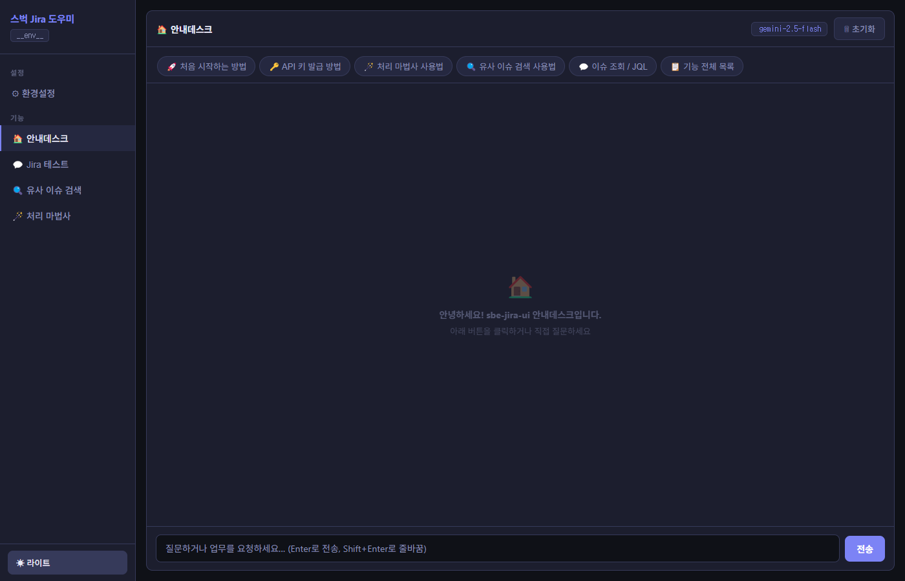
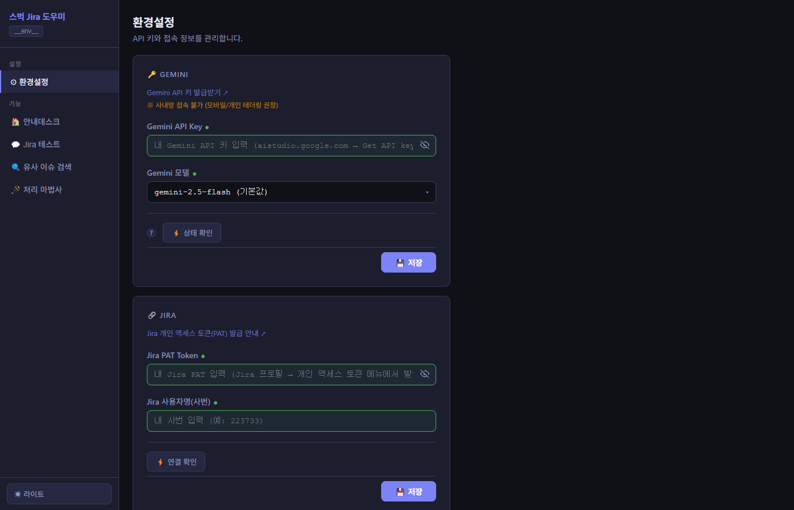
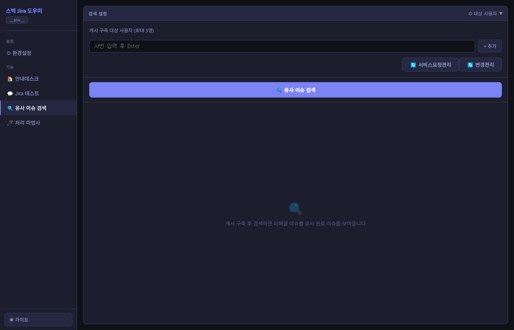

이 문서는 스벅 Jira 도우미 웹 앱의 주요 기능과 사용 방법을 소개합니다.
AI(Gemini) 기반의 JQL 자연어 검색, 유사 이슈 탐색, 처리 마법사 등 업무 효율을 높이는 핵심 기능을 단계별로 안내합니다.
http://<서버IP>:8765)스벅 Jira 도우미는 Jira 업무 처리를 AI로 가속화하는 사내 도구입니다.
| 기능 | 설명 | 사이드바 탭 |
|---|---|---|
| 🤖 AI 채팅 | 자연어로 Jira 이슈를 검색 · 요약 · 분석 | 안내데스크 |
| ⚙️ 환경 설정 | API Key · PAT Token · 대상 사용자 등록 | 환경설정 |
| 🔍 Jira 검색 | JQL 직접 실행 및 결과 확인 | Jira 테스트 |
| 🔗 유사 이슈 | 임베딩 기반 유사 이슈 자동 탐색 | 유사이슈검색 |
| 🪄 처리 마법사 | 이슈 유형별 처리 초안 AI 자동 생성 | 처리마법사 |

▲ 앱 홈 화면 (안내데스크 탭)
Profile → Personal Access Tokens에서 Token 생성
유사 이슈 검색의 기준이 될 사용자(최대 3명)를 사번으로 등록합니다.

▲ 환경설정 화면
자연어로 질문하면 Gemini AI가 JQL로 변환해 Jira를 검색하고 결과를 요약합니다.
현재 담당 이슈와 임베딩(Embedding) 유사도가 높은 과거 이슈를 자동으로 찾아줍니다.
유사 이슈의 처리 내용을 참고해 현재 이슈를 더 빠르게 해결하세요.
./data/embedding_cache.db에 저장되어 재시작 후에도 유지됩니다.

▲ 유사 이슈 검색 결과 화면 (이슈 유형별 아코디언)
이슈 키를 입력하면 AI가 처리 내용 초안을 자동으로 작성합니다.
변경관리·서비스요청관리 이슈 모두 지원하며, 업무 유형에 맞는 항목이 자동 추출됩니다.
| 이슈 유형 | 지원 항목 |
|---|---|
| 변경관리 | 배포절차 / 결제멘트 / 영향도 분석 / 롤백 계획 등 6종 양식 |
| 서비스요청관리 | 계정·권한 처리 / 데이터 추출 / 공통코드 변경 / 기타 — 4종 |
사이드바 하단의 테마 토글 버튼으로 전환합니다. 설정은 localStorage에 저장되어 재접속 후에도 유지됩니다.
API Key, PAT Token, 대화 내용 모두 브라우저 localStorage에 저장됩니다.
같은 브라우저에서는 재접속 후에도 설정이 유지됩니다.
검색 결과의 모든 이슈 키를 클릭하면 Jira 원본 페이지로 바로 이동합니다.
환경설정에서 ⚡ 연결 확인 버튼으로 Jira 연결 상태를 언제든 검증할 수 있습니다.
| 질문 | 답변 |
|---|---|
| AI 응답이 없거나 오류가 발생해요 | 환경설정에서 Gemini API Key가 올바르게 등록되어 있는지 확인하세요. API 사용 한도 초과 시 403 오류가 발생할 수 있습니다. |
| Jira 연결이 안 돼요 | PAT Token 만료 여부를 확인하세요. 토큰을 재발급 후 환경설정에서 업데이트 하세요. |
| 캐시 구축이 너무 오래 걸려요 | 이슈 수가 많을수록 시간이 소요됩니다. 한 번 구축된 캐시는 서버 재시작 후에도 유지되므로 첫 구축 이후에는 빠릅니다. |
| 설정이 저장되지 않아요 | 브라우저의 localStorage가 비활성화되어 있거나 시크릿 모드를 사용 중인지 확인하세요. |
| 대화 내용을 초기화하고 싶어요 | 채팅 화면의 대화 초기화 버튼을 클릭하거나, 브라우저 개발자 도구에서 localStorage를 지우세요. |
📅 최종 업데이트: 2026-03-21 | 스벅 Jira 도우미 v1.x